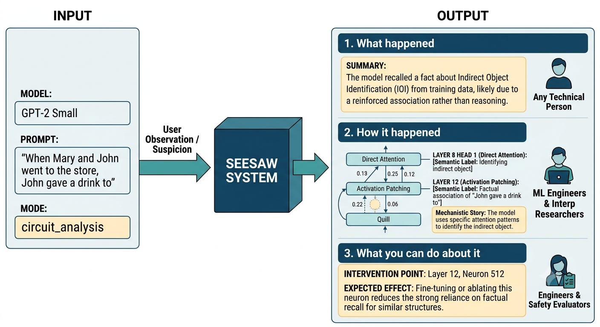

Part 2 of Building Seesaw: Agentic AI for AI Safety Research
Building Seesaw: Agentic AI to do AI Safety Research, Part 2
This build log is on literature review and refinement of the idea of Seesaw and its ultimate short-term and mid-term goal
Let me start with a confession. I am a top-down thinker. There are people who build bottom-up: start with a function, wire it to another, let the system emerge from the ground. I’ve tried that. But I end up lost somewhere in the middle, optimising something I later realise I didn’t need. For me, knowing the destination is what lets me pay close attention to the details on the way there.
In the last post, I introduced Seesaw, which is a multi-agent system for mechanistic interpretability research and its core architecture powered by 3 unique agents: Scout, Lens, and Quill. Scout plans the research. Lens runs it. Quill reviews and critiques it.
That's the spirit behind this post. The goal: double down on what Seesaw should actually look like, read some relevant papers to get a feel for the problem and redefine the input and output surface more cleanly.
Vision
Here’s my current vision regarding Seesaw:
Audience: I knew from the beginning that I wanted Seesaw to be built for a technical audience, specifically engineers and researchers. But one thing I’ve realised is that I’d genuinely enjoy building something accessible to the broader ML community, not just mechanistic interpretability researchers. I wouldn’t call myself an expert in AI safety or interpretability just yet, and that outsider perspective is actually useful: it shapes what I’d want from a tool like this as an ML engineer.
Vision: I want Seesaw to make interpretability research more accessible to surface problems with AI models without requiring deep mech interp expertise to get started. The idea: I do the research and implementation, and another ML engineer picks it up and uses the agentic setup to identify issues with a model. Is this too broad right now? Yes. But that’s fine, let’s define it further as we go.

Paper Review
I’ll admit I cheated a little here by writing about audience and vision before getting to the papers, when in reality I arrived at those conclusions clearly after reading them and folding in my own interests and experience. So consider that section the spoiler. Below I’ll cover three papers I found genuinely interesting. Two of the three come recommended by Neel Nanda. If you’ve been living under a rock: Neel is one of the most prolific researchers in AI safety, specifically in mechanistic interpretability, at Google DeepMind. His resources are excellent for anyone serious about the field, go check them out.
Building and evaluating alignment auditing agents (Blogpost 2025, Anthropic)
Patchscopes (ICML 2024, Google Deepmind)
MAIA: A Multimodal Automated Interpretability Agent (ICML 2024, MIT CSAIL)
Patchscopes
This is the paper that one that I want to spend the most time on as a start. The problem Patchscopes is solving is a translation problem. You run a model on a prompt. You find through ablation or activation patching that a specific attention head is causally responsible for the model’s output. Now what? The raw output of that head is a vector in a high-dimensional space. You need a way to ask the model what it’s actually thinking, in terms you can reason about.
The intuition behind Patchscopes: extract a hidden representation from a specific position in the forward pass, inject it into a second forward pass designed to decode it, and use the model’s own language generation capabilities to translate that vector into natural language. You’re using the model as its own interpreter. The framework formalises this as an eight-component tuple:
Patchscope = (S, i, l, T, j, L, f, M-hat)
S is the source prompt you’re investigating. i is the token position you care about. l is the layer you’re extracting from. T is the target prompt: a diagnostic scaffold designed to elicit a readable interpretation of whatever you inject into it. j and L are where you inject in the target prompt and at which layer. f is a mapping function (usually just identity). And M-hat is the inspection model: which crucially does not have to be the same model you’re studying.
The key theoretical insight: Logit Lens, Tuned Lens, and activation patching are all special cases of this tuple with particular parameters fixed. Patchscopes isn’t a new technique so much as a unifying language for the entire space of representation inspection methods. That’s a genuinely useful framing. It means every interpretability tool Lens currently has is a specific instance of a more general operation.
The finding that is of most value here: a more capable model can interpret the hidden states of a smaller model more accurately than the smaller model can interpret its own states. The cross-model case where M-hat ≠ M using Claude to interpret a smaller model’s internals, say works better than self-interpretation, especially in early layers where representations are still abstract. The inspector doesn’t need to be the subject. In fact, it’s better if it isn’t.
Before reading this paper, the v0 of Lens had a gap I hadn’t fully named. It could tell you which components were causally responsible for a behaviour, but not what those components were actually encoding. The output was legible only to someone already trained to interpret it. Patchscopes fixes that by putting labels on the nodes.
Without those labels, Lens produces circuit diagrams. With them, it produces mechanistic explanations. That’s the difference between “this representation is important” and “this representation already encodes that the official currency of the United States is the dollar three layers before the model outputs it.” The second is actually useful.
Concretely: Patchscopes is going to live inside Lens. After each probe, Lens makes a single model call “here are the top decoded tokens and probabilities, what is this representation encoding?” and that semantic label becomes part of the structured result passed upstream. Quill never sees raw probability distributions. It sees labelled findings. Scout reads those labels and can adapt the investigation plan mid-run.
There’s also a design responsibility that falls squarely on Scout as a result: the target prompt T the diagnostic scaffold that lets the model decode a hidden state has to be specified per-experiment, based on the hypothesis. If Scout doesn’t understand what question each probe is trying to answer, it can’t write a good target prompt. That makes experimental design even more central to Scout’s job than I’d thought. Scout’s output isn’t just a list of tools to call but a scientific plan.
MAIA
MAIA (Multimodal Automated Interpretability Agent) uses a pre-trained vision-language model to autonomously interpret other AI systems. It generates hypotheses, designs experiments to test them, and iterates unlike prior automated interpretability methods, which do a single pass and stop.
The architecture is modular: a System class that instruments the model under study, and a Tools class with functions for synthesising inputs, finding maximally activating examples, and summarising results. The agent composes these tools into investigation workflows. Sound familiar? It’s basically Seesaw for vision models.
The part that resonates with me here is the automated hypothesis generation which creates hypothesis and corresponding examples to validate it. The most instructive thing about MAIA is its failure mode. The system exhibits confirmation bias. It fixates on the first plausible hypothesis it generates and accumulates evidence for it rather than against it.
For now, the insight I take from this paper is to design Scout to be the “hypothesis generator”. For example: If I want to investigate a behaviour, Scout will tell me what I need to patch for, as opposed to the human user reporting it. This will be a v1 feature.
Building and Evaluating Alignment Auditing Agents
Bricken, Wang, Bowman et al. build three agents that autonomously perform alignment auditing: an investigator agent (open-ended investigation using interpretability tools), an evaluation agent (building behavioural evaluations), and a red-teaming agent (eliciting concerning behaviours).
The number that stood out: the investigator agent solves the hidden-goal auditing game 13% of the time under realistic conditions improving to 42% when many agents run in parallel and aggregate findings. The decisive factor separating stronger from weaker agents? Access to interpretability tools and semantic search over training data.
This paper describes what Seesaw could become at scale. The investigator agent is structurally identical to Scout + Lens + Quill, just with a safety-oriented task specification. The parallelisation result is also directly applicable to Seesaw: for ambiguous observations, running multiple Scout hypothesis passes and aggregating is better than committing to a single plan. The pipeline shouldn’t always be serial.
This brings me to the conclusion that interpretability tools are not optional in an investigation system. They are the decisive factor. That’s a strong signal that Lens is the right thing to invest in building well.
Seesaw’s Updated Design
Reading these papers forced two concrete updates to how I’m thinking about the design.
First: the input surface is simpler than I’d specified. The user never specifies layers, heads, or tool sequences. That’s Seesaw’s job. The v0 input becomes:
model: GPT-2 Small
prompt: the input prompt fed to the model
question: (optional)
mode: circuit_analysis | factual_recall
The model output is not provided by the user. Seesaw runs the model and observes the output itself. Scout then determines what’s surprising or worth investigating, and generates the hypothesis. The user describes the situation. Think about it this way: the user notices is suspicious/curious of a model’s behaviour to a certain prompt and describes it to Seesaw as follows:
model: GPT-2 Small
prompt: "When Mary and John went to the store,
John gave a drink to"
question: (optional)
mode: circuit_analysis (the mode is chosen by the user for v0, because of limited tooling)
Seesaw identifies the question. Knowing what question to ask is most of the scientific work if you already knew the right question, you’d probably know where to look.
2. Second: the output surface has three sections, each for a different reader. Quill produces:
What happened: plain English, one paragraph, no jargon. Any technical person.
How it happened: the mechanistic story in prose. Which components were responsible, what each was encoding (Patchscopes labels), the circuit narrative. ML engineers and interp researchers.
What you can do about it: the intervention point. Where in the computation to act and what the expected effect is. Engineers and safety evaluators.
That last section is the part I find most compelling, and the hardest to get right. It’s also the part that makes Seesaw useful to the audience I actually want to build for.
What’s Next
Finally, how does this refinement change my plans?
v0 is: GPT-2 Small, M-Hat as Claude itself, a single mode, Patchscopes inside Lens, IOI as the validation run. The IOI experiment is the right first test not because the finding is valuable Wang et al. already documented the circuit in 2022. It’s the right first test because there’s a known ground truth to calibrate against. If Scout’s plan diverges from what Wang et al. found, Scout is wrong, not the circuit. That’s the only way to know if the pipeline is working before pointing it at something unsolved.
Next post: the first real run. Stay tuned!
Originally published on Mind & AI on Substack.